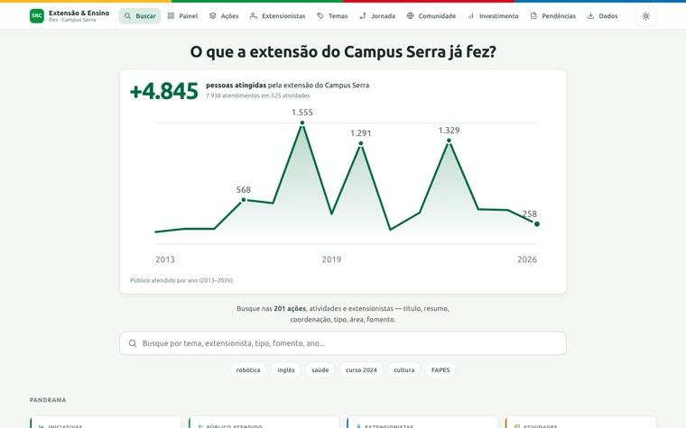
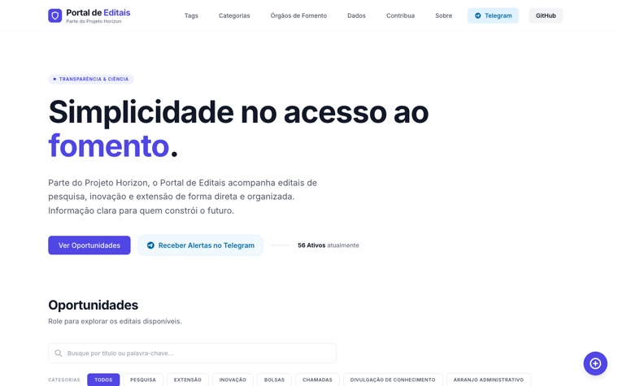
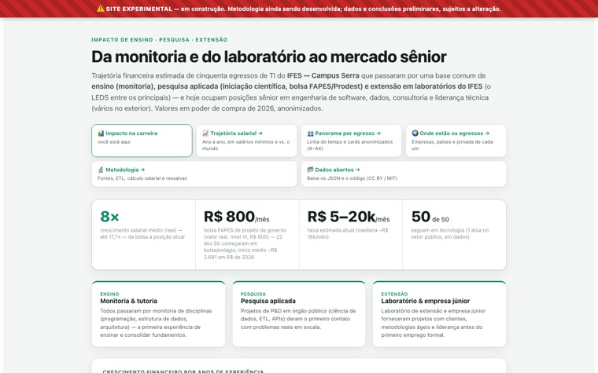
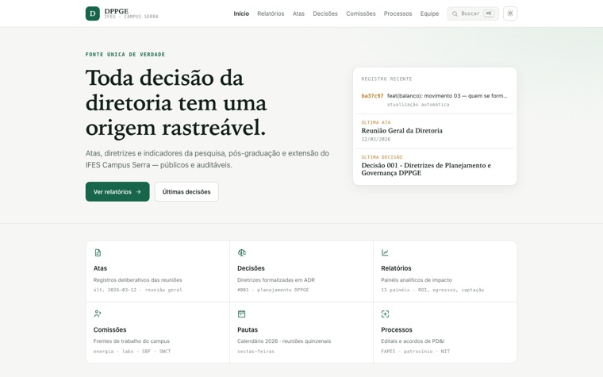
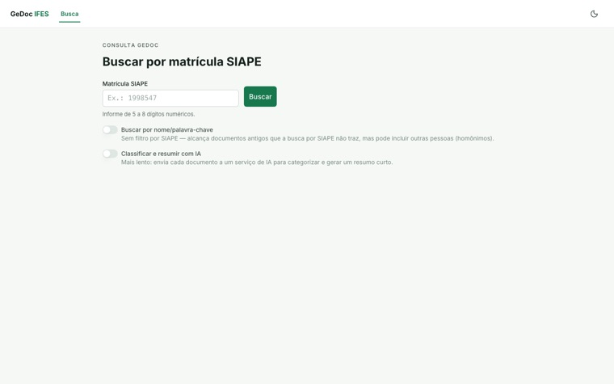
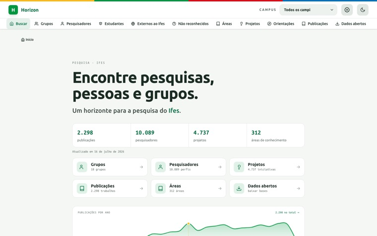

IFES · Campus Serra — DPPGE · balanço dos primeiros 6 meses de gestão
Transparência: descobrindo o campus e seus impactos.
Seis meses de gestão da Diretoria de Pesquisa, Pós-Graduação e Extensão. Em vez de listar o que a diretoria fez, este balanço mostra o que vocês fazem — oito leituras dos dados reais do campus: quem a extensão alcança, como pesquisa e extensão se cruzam, o que acontece com quem passa por aqui, e para onde queremos caminhar juntos em 2027. Antes delas, um prólogo curto: as seis formas de ver o impacto de uma instituição de ensino e pesquisa.
Antes de começar — as muitas formas de ver impacto
Impacto pode ser visto de muitas formas
Nenhum número resume sozinho o impacto de um campus. Existem formas diferentes de olhar, e cada uma vê algo que as outras não veem. Reunimos os indicadores que os nossos dados já sustentam em seis desses olhares — não como nota nem ranking, mas para entender o que já fazemos e ver onde alguém só precisa de apoio. Os movimentos seguintes abrem esses olhares, cada um com a própria fonte à vista.
Seis formas de ver o impacto — e o que cada uma já mostra do campus
Alcance na comunidade
4.845pessoas alcançadas em 201 ações
7.938 atendimentos · 44% com menos de 18 anos · 62% da equipe é estudante
Repercussão científica
1,37FWCI mediano — acima da média mundial
1.959 itens · 5.794 citações · 226 artigos no top 10% do mundo
Retorno do investimento
13×uma bolsa de R$ 1.316 reaparece como R$ 17.073 de renda
mensal do egresso
729 bolsas em 99 projetos · renda ×7,2 desde o primeiro emprego
Formação na graduação
78,4%dos formados passaram por iniciação científica
306 formados · 240 com IC · 37 seguiram para o mestrado
Tecnologia entregue
91ativos tecnológicos distintos
75 softwares · 16 produtos tecnológicos · 49 prêmios e títulos
Transformação social
887pessoas em 14 ações de mulheres e inclusão — um dos temas
que mais se repetem no campus
318 em cultura e arte · 206 em saúde · Mulheres Mil e PRONATEC em 5 ações
Extensão
O campus não cabe dentro dos próprios muros
Cada ação de extensão começou com alguém pedindo ajuda — e alguém daqui atendendo. Somando tudo, 4.845 pessoas foram alcançadas. E vale olhar quem são: 44% do público tem menos de 18 anos. A nossa maior força está na formação de base, na idade em que uma tarde bem vivida ainda muda o rumo de uma história.
Público atendido por faixa etária
Os temas que mais atendem
Ver os mesmos dados em tabela
| Tema | Atendimentos | Ações | % do classificado |
|---|
A robótica leva multidão — quase metade de todo o atendimento. Mas olhando o número de iniciativas, três temas empatam na frente: robótica, mulheres e inclusão, e empreendedorismo, com 14 ações cada. Uma coisa é alcançar muita gente de uma vez; outra é estar perto, várias vezes, de grupos menores. O campus faz as duas.
Pesquisa × Extensão
Ninguém pesquisa sozinho aqui
O trabalho não acontece em bolhas: 78% dos coordenadores de pesquisa do campus também fazem extensão. Quem assina artigo é, muitas vezes, a mesma pessoa que dá oficina na comunidade. E os dados desfazem o medo antigo: fazer extensão não reduz o impacto científico de ninguém. A excelência caminha de mãos dadas com a transformação da comunidade.
Coordenadores de pesquisa que também coordenam extensão
Pesquisa e extensão não competem — elas se alimentam. O laboratório que publica é o mesmo que abre a porta no sábado, e a pergunta que nasce na comunidade é a que vira artigo depois. Aqui não existe escolher entre fazer ciência e servir à sociedade: é a mesma pessoa, no mesmo dia, fazendo as duas coisas.
Não existe um jeito só de ser bom aqui
As pessoas a seguir aparecem porque os dados as mostram — cada uma no que ela faz. Não é ranking: não dá para ordenar numa lista quem publica um artigo que o mundo cita, quem orienta trinta estudantes, quem abre o portão no sábado para trezentas crianças e quem sustenta um projeto de mulheres na ciência por dez anos. São coisas diferentes, medidas de formas diferentes — e o campus precisa das quatro. Os quatro grupos não estão em ordem de importância, e dentro de cada um ninguém está à frente de ninguém.
Ciência que o mundo cita · 6 pessoas
Quem forma gente · 6 pessoas
Quem leva o campus para fora · 6 pessoas
Quem mantém um tema de pé · 6 pessoas
Quem não está nestas quatro telas não está de fora. Está numa das outras formas de olhar, ou num dado que ainda não coletamos — satisfação de quem foi atendido, produto de extensão, orientação em andamento. A lista é do que hoje conseguimos verificar, não do que o campus tem de melhor.
Formação
Passar por projeto virou a regra
Entre 2020 e 2025, 306 pessoas se formaram em Sistemas de Informação e Engenharia de Controle e Automação. A pergunta que importa não é quantas assistiram a aulas — é quantas passaram por pesquisa ou por extensão antes de sair daqui. São no mínimo 240. Quatro de cada cinco.
Um quadrado por pessoa formada · 306 no total
O bloco amarelo é teto, não medida: entre essas 66 pessoas há quem tenha feito extensão sem passar por iniciação científica, e cada uma delas move um quadrado para o verde. O que já dá para afirmar é o contrário, e é o que interessa: no máximo 66 pessoas — 21,6% — se formaram aqui sem passar por pesquisa nem por extensão. Projeto deixou de ser privilégio de poucos.
Por onde essas pessoas passaram · % dos 306 formados
Os caminhos não são exclusivos — a mesma pessoa aparece em mais de uma linha, e é isso que se quer. Duas coisas saltam. Fazer pesquisa é quase universal; entrar numa equipe de extensão ainda não: 240 contra 108. E dos 190 formados que a extensão tocou, 82 estiveram só como público — virar esses 82 em equipe é o caminho mais curto que o campus tem para dobrar o protagonismo estudantil. No meio disso há um dado sobre gente, não sobre número: 194 dos 196 que fizeram IC e TCC mantiveram o mesmo orientador do começo ao fim. O vínculo dura mais que o projeto.
Egressos
Cada degrau é uma vida que mudou
No fim, é disso que tudo se trata: mudar vidas. Todos os egressos analisados seguem na área de TI, e a renda mediana deles multiplicou por 7,2 entre o primeiro emprego e hoje. A escada começa numa bolsa de projeto dentro do campus e chega ao nível sênior. Cada degrau é uma pessoa que um dia sentou numa sala de aula daqui.
Os quatro degraus — renda mediana em R$ de 2026
A curva completa — renda mediana por ano de experiência
A mesma renda medida em salários mínimos — ano a ano
É a medida mais concreta que existe: quantos pisos legais cabem na renda de quem passou por aqui. Em 2012 a mediana da coorte era 1,5 mínimo. Hoje são 10,5. E o degrau que começou tudo — a bolsa — não pagava nem um mínimo inteiro. Ninguém entra nessa escada por causa do dinheiro do primeiro degrau; entra porque alguém abriu a porta do laboratório.
Trocando a comparação — R$/mês de 2026, do piso ao mercado mundial
Comparada ao mercado brasileiro, a coorte está acima do sênior nacional. Comparada ao mercado mundial, a mesma renda é 47% do que um dev de igual experiência ganha no mundo — e o que separa as duas leituras não é competência, é câmbio. Treze dos cinquenta já trabalham para empregador internacional, todos em nível sênior ou acima: a fronteira é atravessável, e quem atravessou saiu da mesma sala de aula.
Fomento
A força que já temos — e como multiplicá-la
O corpo docente é uma potência: a captação do campus está na ordem de dezenas de milhões de reais, recurso que volta em equipamento, bolsa e laboratório. E os dados mostram algo que vale a gente conversar com carinho: hoje 70% do orçamento FAPES está concentrado em cinco coordenações — e espalhar essa capacidade é o que pode multiplicar o resultado de todo mundo.
Como o orçamento FAPES se distribui · 99 projetos
- Cinco coordenações de maior porte70%
- Três coordenações seguintes11%
- Todas as outras coordenações19%
O que esse número quer dizer — e o que ele não quer. Um edital grande da FAPES pode valer mais que dez pequenos somados: o campus já provou que consegue os dois — uma única proposta que trouxe 24% de todo o orçamento, e coordenações que sustentam dez projetos ao mesmo tempo, ano após ano. São duas forças distintas, e ambas já são nossas. Concentração de orçamento não significa que poucos trabalham: significa que essa competência ainda circulou pouco entre nós. E competência que circula é competência que se multiplica.
O dinheiro da pesquisa voltou como bancada, sala e ar-condicionado
Nenhum desses recursos era obrigação de ninguém. Cada um veio de projeto de pesquisa captado por um docente que, na hora de decidir onde aquele dinheiro renderia mais, escolheu o campus inteiro em vez do próprio laboratório. Somando, são 46 computadores, um datacenter em reforma, um laboratório inteiro reconstruído, quatro salas que vão virar espaço de trabalho compartilhado, três laboratórios melhorados e dois aparelhos de ar-condicionado que tornaram uma sala utilizável no verão.
Esta lista não está em ordem de valor, e isso é de propósito. Dois aparelhos de ar-condicionado de R$ 5 mil tornaram uma sala utilizável — e isso muda o dia de quem trabalha ali tanto quanto um datacenter novo muda o de todo mundo. O que essas oito pessoas fizeram tem o mesmo nome, independentemente do tamanho: escolheram investir. E o valor não mostra o começo da história: cada uma dessas doações nasceu de alguém escrevendo projeto, muitas vezes de noite, sem garantia de aprovação.
A bolsa está no começo — um ano de bolsa contra um ano de renda
Todas as linhas são de um ano — é a única comparação que não depende de truque: mesma unidade dos dois lados. E ela diz uma coisa simples: o recurso que abre a porta é pequeno diante do que vem depois. Mas isto não é retorno para a agência de fomento nem para o campus: esse dinheiro vira renda de uma pessoa, imposto pago e família sustentada. E é associação, não causalidade — quem chegou lá também fez um curso de quatro anos, teve orientação, laboratório e estágio. A bolsa é a primeira peça do caminho, não o caminho inteiro.
O convite para 2027
Esse número não é um problema a corrigir: é expertise que já mora aqui, no nosso próprio corpo docente. O convite para 2027 é montar as propostas em grupo desde a primeira linha — quem já conhece o caminho junto de quem está começando, laboratórios diferentes numa submissão só. Proposta coletiva costuma nascer mais forte: mais gente para escrever, mais áreas para sustentar o mérito, mais braços para executar depois. Multiplicar não é repartir o que já existe — é fazer o próximo edital caber em mais gente.
Os primeiros seis meses
Tudo isso já estava aqui
Nenhum número foi criado especialmente para esta apresentação. Quase todos vieram de painéis que já rodam, com API aberta e código público — a única exceção, os investimentos dos docentes, se declara no próprio bloco. O trabalho da gestão nestes seis meses foi construir a infraestrutura que torna o campus legível — para a diretoria, para os docentes e para quem estiver de fora.
Infraestrutura de dados em produção
Os seis portais — a tela de cada um, e o link para conferir

01Painel de Extensão — SRC
O acervo da extensão navegável: ações, atividades, extensionistas, temas, investimento e o índice FORPROEX.
ifesserra-lab.github.io/src
02Portal de Editais
Editais de pesquisa, extensão e fomento num só lugar, com coleta automatizada e sempre atualizada.
ifesserra-lab.github.io/portal_edital
03Salários & carreira de egressos
Para onde vão os formados: 50 egressos em 204 empresas, 13 delas fora do Brasil. Anonimizado.
ifesserra-lab.github.io/egressos
04Diretoria — indicadores de gestão
Indicadores consolidados do campus para apoio à decisão: ensino, pesquisa e extensão num só painel.
ifesserra-lab.github.io/diretoria
05GEDoc — busca de documentos
Busca sobre o acervo de documentos institucionais: normas, atas e editais em segundos.
gedocs.vercel.app
06Horizon — pesquisa & produção
Dados acadêmicos centralizados: grupos de pesquisa, produção e editais, com pipeline próprio.
ifesserra-lab.github.io/horizon_dashboardCada tela aí é clicável e está no ar agora. É a diferença entre dizer que existe infraestrutura e deixar qualquer pessoa conferir: os números desta apresentação saem desses seis lugares, e nenhum deles pede login.
O que isso muda
Antes, responder “quantas pessoas a extensão alcançou?” era um pedido de levantamento, e alguém passava a tarde atrás de planilha. Agora é uma URL. Esse tempo recuperado é o que permite a esta apresentação declarar as próprias ressalvas em vez de escondê-las — e é ele que sustenta o convite de 2027.
Apoio real
Você não precisa fazer sozinho
Nosso objetivo é facilitar: tirar a burocracia do caminho de quem deseja transformar ideias em projetos reais. Para isso estruturamos uma equipe dedicada e humana, pronta para dar o suporte necessário para você tirar o seu projeto do papel.
A equipe do Escritório de Projetos
Procure qualquer pessoa da equipe. O escritório existe para carregar a burocracia — para que o docente carregue a pesquisa.
O volume que já passa pelas nossas mãos
Por que o escritório existe — a oportunidade nos dados
Cada quadradinho é uma ação que o campus já faz — turma montada, gente atendida, resultado entregue. Trinta e cinco têm fomento; as outras 107 seguem de pé sem nenhum recurso captado. Não é uma falha: é um estoque de trabalho comprovado, esperando alguém dizer que edital combina com ele. É exatamente para isso que o escritório existe.
Portal de Editais
As chamadas de pesquisa, extensão e fomento reunidas e filtráveis num só lugar, com coleta automatizada e sempre atualizada. Ninguém mais precisa descobrir edital por e-mail encaminhado. ifesserra-lab.github.io/portal_edital
Visão 2027
O melhor a gente ainda vai fazer junto
Os sete movimentos anteriores mostram um campus que já entrega. O próximo ciclo é sobre fazer isso em conjunto — usar os dados e tudo o que aprendemos este ano para planejar um 2027 sistêmico.
Quatro passos
Espaço de Projetos Colaborativos
Nosso próximo grande passo é criar um ambiente físico e estruturado para unir talentos: um local onde grupos de pesquisa, núcleos e grupos de extensão possam convergir ideias, colaborar e executar grandes projetos em conjunto.
responde à concentração do movimento 05Integração total do campus
Vamos mergulhar fundo para entender e integrar cada vez mais a força da nossa Incubadora e da nossa Pós-Graduação ao restante do ecossistema.
o campus como um sistema, não como setoresConhecer os TAEs do campus
Os técnicos-administrativos também são força de transformação social, por meio de pesquisa, ensino e extensão — e ainda não estão no mapa. Queremos responder perguntas simples: quem são eles, quais as suas habilidades, quem tem mestrado, quem tem doutorado e de que projetos cada um pode participar — para que essa força entre nas propostas desde a primeira linha.
a mesma legibilidade que os docentes já têmUm 2027 sistêmico
Usar os dados e tudo o que aprendemos este ano para planejar um 2027 em que o campus atue cada vez mais em união, multiplicando os resultados que vocês já entregam hoje à sociedade.
planejamento com base no que está medidoDiagrama conceitual — representa o movimento que queremos, não uma contagem de grupos.
O convite
Nada disso é obra da diretoria: 4.845 pessoas alcançadas, 78% de pesquisadores que também fazem extensão, egressos que multiplicaram a renda por sete, R$ 849 mil investidos no campus — isso é trabalho de vocês. O que propomos para 2027 é simples: que o caminho que alguns descobriram sozinhos vire caminho de todo mundo. Que ninguém mais precise aprender do zero aquilo que o campus, junto, já sabe fazer.